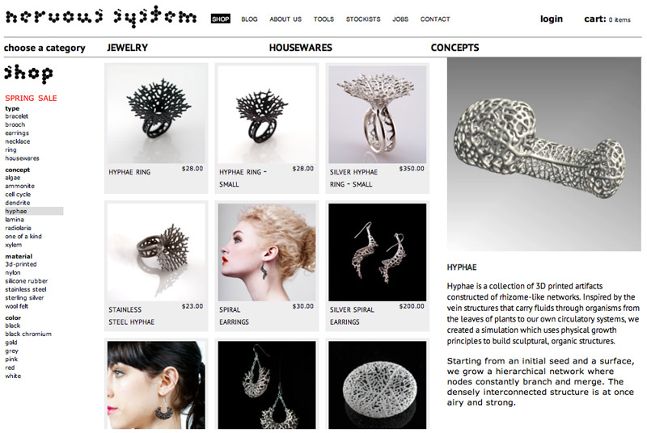
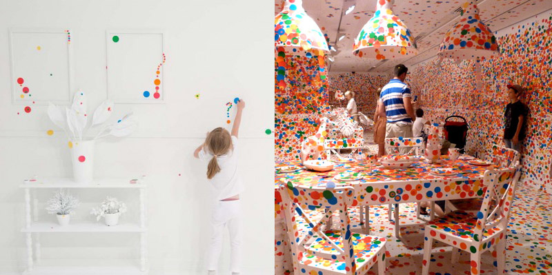

Night Lights
An installation that would go beyond merely projection on buildings and allow viewers to become performers, by taking their body movements and amplifying them 5 stories tall.
Website: YesYesNo Interactive Projects
An installation that would go beyond merely projection on buildings and allow viewers to become performers, by taking their body movements and amplifying them 5 stories tall.
Website: YesYesNo Interactive Projects
The Motion Project was a collaboration between a lot of clever creative people working together to create a machine that turns motion into music.
Website: The V Motion Project
Tech info
From Disney, stand in the specially marked circle opposite the digital billboard, and an AR Disney character will interact with you as you watch on Times Square’big screen.
BBC Home Entertainment partnered with Appshaker Ltd for its first Augmented Reality Tour in the US. With 4 distinctive broadcast quality 3D scenes, delighted crowds had the opportunity to interact with the animals of the Polar Region.
Architectural projection mapping is here and ready to boggle your mind. The idea is that you project a 3D object onto a 2D surface, like the facade of a building.
A programmed theatrical performance by 16 flying robots reflecting light beams on the stage.
Behind the Scenes: Meet Your Creator
Tech info
Attending the recent InfoComm trade show in Las Vegas, Pufferfish showed the world their latest multi-touch interactive display allowing visitors to explore a digital globe, triggering touch points and calling up relevant information on the sphere, adding a new dimension to the medium.
Website: Pufferfish
Tech info
Created by Bartholomäus Traubeck, Years is a record player that translates wood’s year rings into sound. Using a ps eye camera, the grain on the slices of wood is read and converted into music. Includes modified turntable, computer, camera, acrylic glass, veneer, approx. 90x50x50 cm.
Website: traubeck.com/years
Tech info
This levitation effect is explained by the Meissner effect, which describes how, when a material makes the transition from its normal to its superconducting state, it actively excludes magnetic fields from its interior, leaving only a thin layer on its surface.
Website: quantumlevitation.com
Tech info
Icarus is a Free Flight Simulator, the Kinect transforms the postion of your arms to servo positions. The end product has a 55" LCD mounted in front of you where you can see the 3D world you fly trough. Still in development.
Holy shit. It’s a goddamn Hover Bike.
Website: Aerofex
An interactive installation that allows children to use their arms to puppeteer larger than life creatures projected on the wall in front of them. Children can also step in to the environment and interact with the puppets directly, petting them or creating food for them to eat
Website: Design I/O
The latest project created at Disney Research by Ivan Poupyrev in collaboration with Philipp Schoessler, Jonas Loh/Studio NAND, and Munehiko Sato. The project is concerned with developing technology for designing “highly expressive interactive plants”, both living and artificial. Driven by the rapid fusion of computing and living spaces, the team take interaction from computing devices and places it in the physical world using livings plants as an interactive medium.
Website: Disney Research
Tech info
From The Product, a Berlin-based design studio with a focus on objects, a custom-built instrument for performing electronic music by DJing visual patterns on record-sized discs.
Website: the-product.org/soundmachines
Tech info
Kreek is a Kinect controlled interface which extends a 2D multi-touch environment by the perception of depth. This allows the user to literally reach into the interface and gives applications the possibility to interprete parameters like pressure or solid distance.
Website: Lukas Hoeh
Leap represents an entirely new way to interact with your computers. It’s more accurate than a mouse, as reliable as a keyboard and more sensitive than a touchscreen.
Website: Leap Motion
A drawing-based musical instrument
Website: binaura.net
Tech info
Created by Ruslan Gaynutdinov, the project investigates ways sound can be visualised and how the spectator can be immersed in simple sound based geometric compositions.
A collection of installations work from Snibbe Interactive. They offer a variety of tech products for interactive exhibits.
Website: Snibbe Interactive
Tech info
The SOE made its public debut in the film Minority Report, whose bellwether interface one of Oblong's founders designed.
Website: Oblong Industries
Tech info
Nervous System is a generative design studio that works at the intersection of science, art, and technology. We create using a novel process that employs computer simulation to generate designs and digital fabrication to realize products. Drawing inspiration from natural phenomena, we write computer programs based on processes and patterns found in nature and use those programs to create unique and affordable art, jewelry, and housewares.
Website: n-e-r-v-o-u-s.com Tech info
Created by Mathieu Rivier at ECAL University of Art and Design, Light Form is a sculpture that explores different forms of representations and interactions using a solid but uneven display. The faceted landscape is built on a plinth with integrated projector and infra red sensing to display content that is constrained to the form of the display but offers quite unique interactive experience.
Website: mathieurivier.ch
Tech info
Interactive Laser Sculpture is work in progress by Jayson Haebich that involves creating light sculptures out of laser light. The beams of light are interactive and responsive to touch and create an environment of light, colour and sound.
Website: jaysonh.com
Tech info
Artists have been obsessed with transcribing the effects of light for centuries. In the past 50 years, though, people such as Dan Flavin, James Turrell and the British artist Anthony McCall have started producing art made out of light itself.
Review: The Telegraph
A Rubens’ tube, also known as a standing wave flame tube, or simply flame tube, is an antique physics apparatus for demonstrating acoustic standing waves in a tube.
Formerly known as Microsoft Surface, Microsoft® PixelSense™ technology enables the Samsung SUR40 to recognize fingers, hands and objects placed on the screen, enabling vision-based interaction without the use of cameras. The individual pixels in the display see what's touching the screen and that information is immediately processed and interpreted.
A propeller display like this one relies on a phenomenon called Persistence of Vision, or POV. If the display is rotating fast enough (at least 25 rotations per second), the circuitry can turn on and off certain LEDs at certain times throughout the rotation to produce a static picture. Our brains trick us into thinking the image is actually static, when in reality it is not.
32 Red/Green/Blue LEDs, capable of displaying 8 colors per pixel.
A form of propeller display, a SpokePOV is a 'stick' of LEDs with a magnetic (hall effect) sensor on the outer end. When a magnet passes by, the microcontroller takes note. By counting how long it takes between magnet passes, SpokePOV can tell how fast its rotating and quickly blink the LEDS to present an image. Therefore, no matter how fast you are riding, the image will show up correctly!
‘Robot Soccer World Cup’ (aka RoboCup) is an international robotics competition. The aim is to promote robotics and AI research, by offering a publicly appealing, but formidable challenge. The mission: to have a winning RoboCup team play human World Cup victors in a competitive game by 2050.
How about Robot Ice Hockey?
Website: Robocup.org
Slate: Robot Soccer Leads To Robotics Breakthroughs
A simple to use software package for wall and floor projections that utilizes the Kinect’s motion-tracking technology in conjunction with a projector.
Website: PO_MOtion
HTML5 WebSockets is a web technology providing for bi-directional, full-duplex communications channels over a single TCP connection. What this means is high-speed, multi-agent connectivity through the browser. In other words, you can do multiplayer gaming in the browser. Socket Racing is a demo of such a game.
Node.js is another web technology for high speed, multi-user browser connectivity. Here’s a simple demo of a drawing app.
The application here would be interactivity between people at the event and people outside the event on their computers, tablets and smartphones.
An opensource library of electronic modules that snap together with tiny magnets for prototyping and play.
Website: littlebits.cc
A 4-wheeled graffiti machine, with a pendulum arm, arduino and spray cans to create random strokes as it moves up and down the gallery space
Tech infoTotally white. Walls and floor, ceiling, furniture, accessories. And a piano. Then, bring in children. And give them stickers.
Not high tech, but stickers are cool. What if we think about ways of doing low tech meets high tech.
Balloons are pretty cool too, like above in an exhibit at the Ogilvie Transportation Center, or the interactive zygote balls below.
In Wired Magazine Website: Hide & Seek